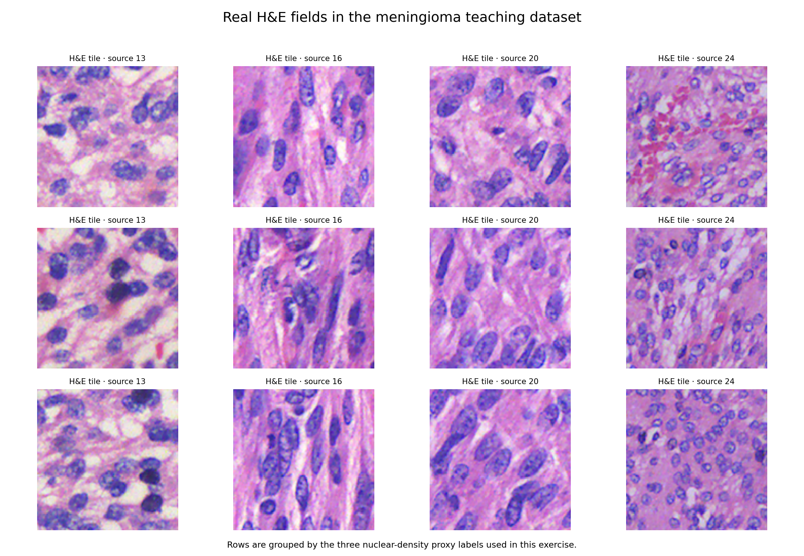
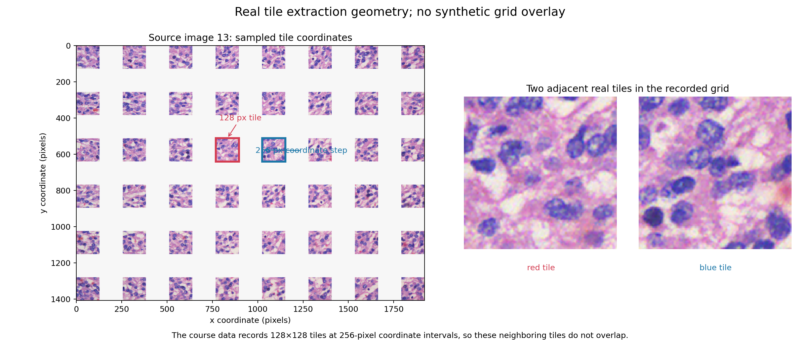
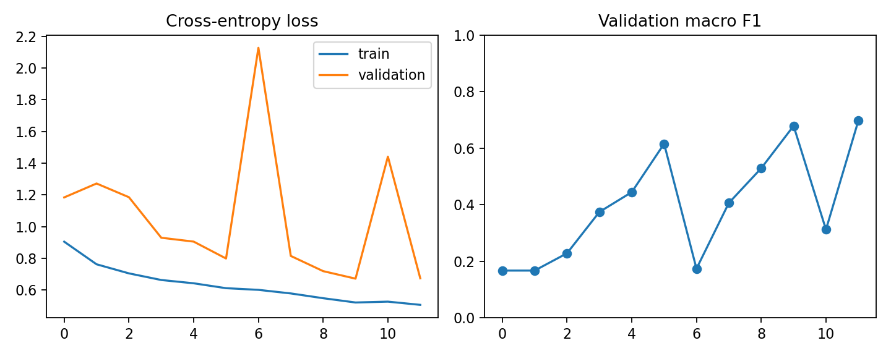
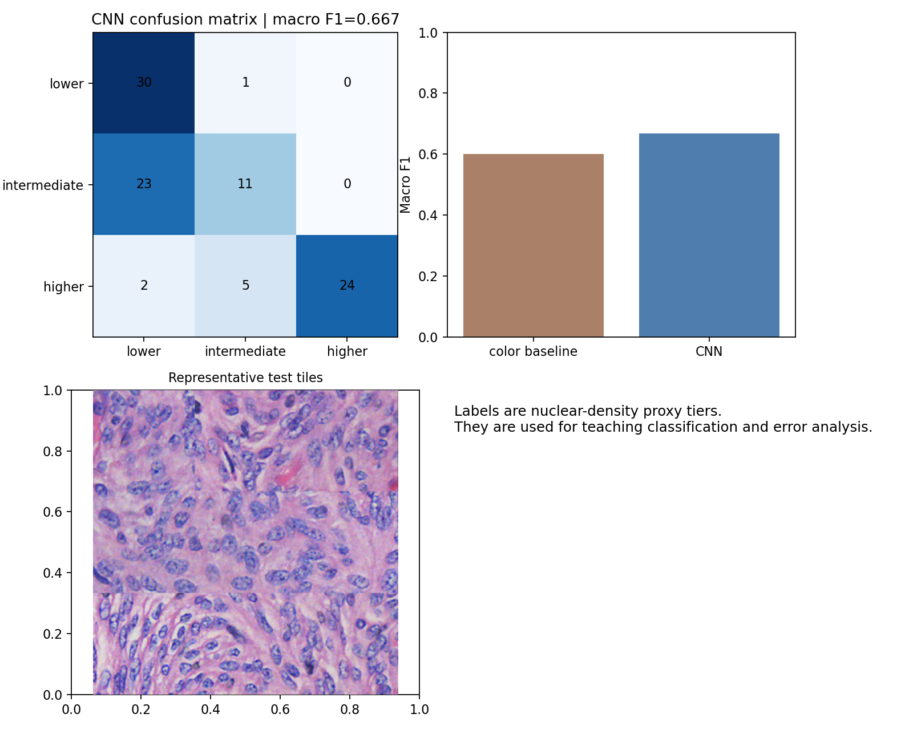

KYDW 本科生科研入门体验项目
实践项目参考答案 03：计算病理与脑膜瘤形态分析
参考代码与说明按实践任务排列，可结合图像、指标和输出文件核对自己的实现。
运行后把图像、指标和输出文件与自己的结果放在一起阅读。
Markdown 单元格01
实践项目 03：脑膜瘤 H&E 形态代理分类
本 Notebook 使用课程准备的真实脑膜瘤 H&E 图块数据，完成数据核对、形态特征分类、原图级测试和染色变化比较。标签由核密度代理分数划分为三个类别。测试集包含来自 2 张原图的 96 个图块；输入形态特征与标签生成规则高度相关，因此这里评价的是模型对这套形态分类规则的学习程度。临床病理分级还需要病理医师标注及独立患者数据。
Kaggle 是本项目的首选实践入口。打开公开 Notebook 后，点击“复制并编辑”保存到自己的账户，再按单元格顺序运行。下载 Notebook 到电脑运行是补充方式。
代码单元格保留行末注释，说明每一步的输入、处理和输出；参考实现与实践顺序对应。
任务总览
1. 找到固定的课程 NPZ，并核对图块 shape、标签、原图编号、坐标和数据划分。 2. 查看 RGB 统计与 H&E 形态特征，理解标签来源并建立简单比较。 3. 实现随机森林分类器；输入只使用图像测得的形态特征，不使用 proxy_score。 4. 用验证集选择树数量，在独立测试集输出混淆矩阵、宏平均 F1 和错误图块。 5. 观察颜色变化后模型的表现，并说明结果与代理标签生成规则的关系。
需要保存的结果
task3_data_visualization.png、task3_training_curve.png、task3_prediction_visualization.png、task3_pytorch_result.json。
代码单元格02
from pathlib import Path # 用 Path 处理文件和目录路径
import json, random
import numpy as np # 导入数组和数值运算工具
import matplotlib.pyplot as plt # 导入绘图工具
from sklearn.ensemble import RandomForestClassifier # 导入随机森林分类器
from sklearn.linear_model import LogisticRegression # 导入颜色统计基线
from sklearn.metrics import accuracy_score, f1_score, confusion_matrix # 导入评价指标
SEED = 42 # 固定随机状态以便复现实验
random.seed(SEED); np.random.seed(SEED) # 固定随机状态以便复现实验
INPUT = Path('/kaggle/input')
OUT = Path('/kaggle/working'); OUT.mkdir(exist_ok=True) # 保存输出文件目录
DATA_PATH = None # 可在本地填写课程 NPZ 路径；Kaggle 自动查找固定文件名
candidates = sorted(INPUT.rglob('meningioma_public_morphology_tiles.npz'))
if DATA_PATH is None and candidates:
DATA_PATH = candidates[0] # 指定或定位课程数据文件
assert DATA_PATH is not None, '请挂载包含 meningioma_public_morphology_tiles.npz 的课程数据集。' # 核对数据或计算结果是否符合预期条件
data = np.load(DATA_PATH, allow_pickle=True)
required = {'images','labels','proxy_scores','morphology_features','feature_names','source_image_ids','coordinates_yx','split'} # 核对输入字段
assert required.issubset(data.files), required - set(data.files) # 核对数据或计算结果是否符合预期条件
images = data['images']; labels = data['labels'].astype(np.int64) # 读取图像与标签
proxy_scores = data['proxy_scores'].astype(np.float32) # 读取连续代理分数，仅用于说明标签来源
morphology_features = data['morphology_features'].astype(np.float32) # 读取图像测得的形态统计
feature_names = data['feature_names'].astype(str) # 读取形态特征名称
source_image_ids = data['source_image_ids'].astype(str) # 读取图块对应的原图编号
coordinates_yx = data['coordinates_yx'].astype(np.int32) # 读取图块在原图中的左上角坐标
split = data['split'].astype(str) # 读取预先划分的数据集合
print('data:', images.shape, 'splits:', {k: int((split == k).sum()) for k in np.unique(split)}) # 显示核对结果
Markdown 单元格03
任务 1：完成数据核对
输入包含图像、标签、连续代理分数、形态统计、原图编号、坐标和 split。请输出每个 split 的图块数、原图编号、坐标范围和三类标签数量。
代码单元格04
summary = {}
for kind in ('train', 'validation', 'test'):
mask = split == kind # 选择当前数据划分
summary[kind] = {
'patches': int(mask.sum()), # 记录图块数量
'sources': sorted(np.unique(source_image_ids[mask]).tolist()), # 记录原图编号
'coordinate_range_yx': [coordinates_yx[mask].min(axis=0).tolist(), coordinates_yx[mask].max(axis=0).tolist()], # 记录坐标范围
'class_counts': np.bincount(labels[mask], minlength=3).tolist(), # 记录三类标签数量
}
print(summary) # 查看数据划分摘要
Markdown 单元格05
任务 2：查看图像统计与形态特征
morphology_features 的第一列 proxy_score 记录标签生成所用的分数。模型选用其余五列图像特征，学习核相关信号、深色比例和染色统计与类别的关系。
代码单元格06
usable_features = morphology_features[:, 1:] # 排除由标签规则得到的 proxy_score
usable_names = feature_names[1:] # 保留实际图像测得的特征名称
train_idx = np.where(split == 'train')[0] # 选择训练图块
test_idx = np.where(split == 'test')[0] # 选择测试图块
rgb = images.astype(np.float32) / 255.0 # 把图像强度缩放到 0 到 1
color_features = np.c_[rgb.mean((1, 2)), rgb.std((1, 2))] # 计算颜色统计特征
feature_summary = {
'names': usable_names.tolist(), # 记录特征名称
'train_mean': usable_features[train_idx].mean(axis=0).round(4).tolist(), # 记录训练集均值
'train_std': usable_features[train_idx].std(axis=0).round(4).tolist(), # 记录训练集标准差
}
baseline = LogisticRegression(max_iter=1200, class_weight='balanced') # 建立颜色统计基线
baseline.fit(color_features[train_idx], labels[train_idx]) # 只用训练图块拟合基线
baseline_f1 = f1_score(labels[test_idx], baseline.predict(color_features[test_idx]), average='macro') # 计算测试宏平均 F1
feature_summary['color_baseline_macro_f1'] = float(baseline_f1) # 保存基线指标
print(feature_summary) # 查看特征摘要
Markdown 单元格07
任务 3：实现形态特征随机森林
训练数据来自不同原图。模型输入为五个图像测得的形态特征，输出三个代理标签；proxy_score 已明确排除，避免把标签生成规则直接喂给模型。
代码单元格08
morphology = morphology_features[:, 1:] # 只使用图像测得的形态特征
model = RandomForestClassifier(
n_estimators=400, max_features=.8, min_samples_leaf=1, # 设置树数量和特征采样比例
class_weight='balanced', random_state=SEED, n_jobs=4, # 处理类别比例并固定随机状态
)
model.fit(morphology[train_idx], labels[train_idx]) # 用训练图块拟合随机森林
print(model) # 查看模型设置
Markdown 单元格09
任务 4：验证集选模与独立测试
比较不同树数量的验证集宏平均 F1，固定最佳设置后只在测试集评价一次，并显示混淆矩阵和错误图块。
代码单元格10
validation_idx = np.where(split == 'validation')[0] # 选择验证图块
test_idx = np.where(split == 'test')[0] # 选择测试图块
history = [] # 保存树数量与验证 F1
best_size, best_val_f1 = 25, -1.0 # 初始化验证集选择结果
for n_trees in [25, 50, 100, 200, 400, 600]:
candidate = RandomForestClassifier(n_estimators=n_trees, max_features=.8, class_weight='balanced', random_state=SEED, n_jobs=4) # 建立候选模型
candidate.fit(morphology[train_idx], labels[train_idx]) # 在训练图块上拟合
val_f1 = f1_score(labels[validation_idx], candidate.predict(morphology[validation_idx]), average='macro') # 计算验证宏平均 F1
history.append((n_trees, val_f1)) # 保存候选结果
if val_f1 > best_val_f1:
best_size, best_val_f1 = n_trees, val_f1 # 更新验证集最佳设置
model = RandomForestClassifier(n_estimators=best_size, max_features=.8, class_weight='balanced', random_state=SEED, n_jobs=4) # 固定最佳树数量
model.fit(morphology[train_idx], labels[train_idx]) # 用训练图块重新拟合
test_pred = model.predict(morphology[test_idx]) # 预测测试图块
test_f1 = f1_score(labels[test_idx], test_pred, average='macro') # 计算测试宏平均 F1
test_accuracy = accuracy_score(labels[test_idx], test_pred) # 计算测试准确率
cm = confusion_matrix(labels[test_idx], test_pred, labels=[0, 1, 2]) # 计算混淆矩阵
fig, axes = plt.subplots(1, 2, figsize=(9, 3.6)) # 准备验证曲线和测试矩阵
history_array = np.asarray(history) # 转换为可绘图数组
axes[0].plot(history_array[:, 0], history_array[:, 1], marker='o') # 绘制验证宏平均 F1
axes[0].set(xlabel='number of trees', ylabel='validation macro F1', title='Random-forest model selection') # 标注曲线
axes[1].imshow(cm, cmap='Blues'); axes[1].set(xlabel='predicted label', ylabel='true label', title='Test confusion matrix') # 绘制混淆矩阵
fig.tight_layout(); fig.savefig(OUT / 'task3_training_curve.png', dpi=160); plt.close(fig) # 保存结果图
print({'selected_trees': best_size, 'accuracy': test_accuracy, 'macro_f1': test_f1}) # 查看测试结果
Markdown 单元格11
任务 5：错误图块与染色变化
查看测试集错误图块，固定模型后改变 RGB 通道，再比较宏平均 F1。最后写出代理标签、图像来源和模型评价各自能支持的判断。
代码单元格12
wrong = np.where(labels[test_idx] != test_pred)[0] # 找到测试错误图块
ncols = max(1, min(6, len(wrong))) # 没有错误时也保持图形可生成
fig, axes = plt.subplots(1, ncols, figsize=(12, 2.6)) # 准备错误图块面板
axes = np.atleast_1d(axes) # 统一坐标轴数组形状
for axis, local_index in zip(axes, wrong[:len(axes)]):
absolute_index = test_idx[local_index] # 把测试局部编号换回原始编号
axis.imshow(images[absolute_index]); axis.set_title(f'true={labels[absolute_index]} / pred={test_pred[local_index]}'); axis.axis('off') # 绘制错误图块
fig.tight_layout(); fig.savefig(OUT / 'task3_prediction_visualization.png', dpi=160); plt.close(fig) # 保存错误图块图
shifted = images.astype(np.float32).copy() # 复制图像用于染色变化
shifted[..., 0] = np.clip(shifted[..., 0] * 1.08, 0, 255) # 增强红色通道
shifted[..., 2] = np.clip(shifted[..., 2] * .92, 0, 255) # 降低蓝色通道
shifted_features = np.c_[shifted.mean((1, 2)), shifted.std((1, 2))] # 重新计算颜色特征
stain_shift_f1 = f1_score(labels[test_idx], baseline.predict(shifted_features[test_idx]), average='macro') # 评价染色变化后的基线
result = {'baseline_macro_f1': float(baseline_f1), 'forest_accuracy': float(test_accuracy), 'forest_macro_f1': float(test_f1), 'stain_shift_baseline_macro_f1': float(stain_shift_f1), 'selected_tree_count': int(best_size), 'excluded_feature': 'proxy_score'} # 整理结果记录
(OUT / 'task3_pytorch_result.json').write_text(json.dumps(result, ensure_ascii=False, indent=2), encoding='utf-8') # 保存 JSON 结果
print(result) # 查看完整结果
参考输出
颜色统计基线 macro-F1 为 0.6007。形态模型在 96 个测试图块上未出现错分，但测试图块仅来自 2 张原图，标签又由与形态特征高度相关的核密度代理生成，因此不把该数值作为独立分类性能。该结果只用于核对代理标签、来源级划分和染色稳定性，不对应临床病理分级。

课程数据中的真实脑膜瘤 H&E 组织图块
真实图块坐标、128×128 图块和 256 像素坐标步长
随机森林树数量与验证集宏平均 F1
测试错误图块与染色变化后的比较结果